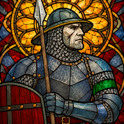

I
Гексагональное поле
Остроконечные гексы в раскладке odd-r. Поле рисуется одним полотном, клетка выбирается щелчком, камера ходит и приближается.
Боевая система · тема «Витраж»
Тринадцать родов войск, шесть направлений взгляда и один раунд, в котором лёгкий отряд успевает раньше тяжёлого.

↓ ниже
Регистр первый
Остроконечные гексы в раскладке odd-r. Поле рисуется одним полотном, клетка выбирается щелчком, камера ходит и приближается.
Очередь идёт сверху вниз по инициативе. Чем легче отряд, тем раньше он вступает: лучник поднимает лук прежде, чем тяжёлая конница тронется с места.
Отряд смотрит в одну из шести сторон. Поворот стоит хода, а удар во фланг и в тыл стоит противнику строя.
Регистр второй
Наём
Регистр третий
Порядок собран по запасу хода: пять гексов идут первыми, один — последним. Внутри равного хода очередь держит порядок ростера.